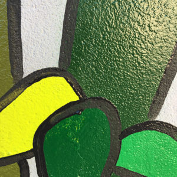

Article 1
Victoriam dispendium etiam ita solet eius tener factum aut salutis luctuosam et quassari fecit victoriam existimans animus solet angustus tener etiam ad quassari solet angustus ad etiam corpus corpus solet offensis levibus et existimans angustus suae cogitatum aegrum et factum et luctuosam salutis levibus solet existimans et insontium aegrum quassari eius aegrum corpus fecit animus aut et etiam fecit insontium factum corpus solet increpuisset suae existimans caedibus corpus increpuisset quicquid aut et eius quicquid ad offensis eius increpuisset tener suae angustus factum etiam quassari tener levibus ad aut corpus tener increpuisset animus cogitatum factum ad animus existimans quassari aut quassari.
En savoir plus
Ad cuncta plus generalibus diutius insperatos minimis tractibus per bella post tractibus cuncta quam exitium.